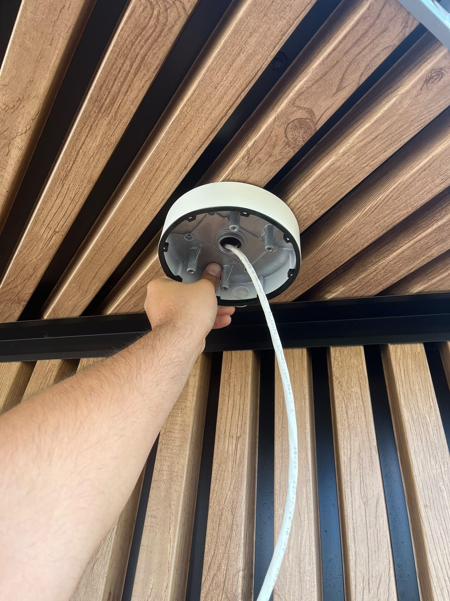
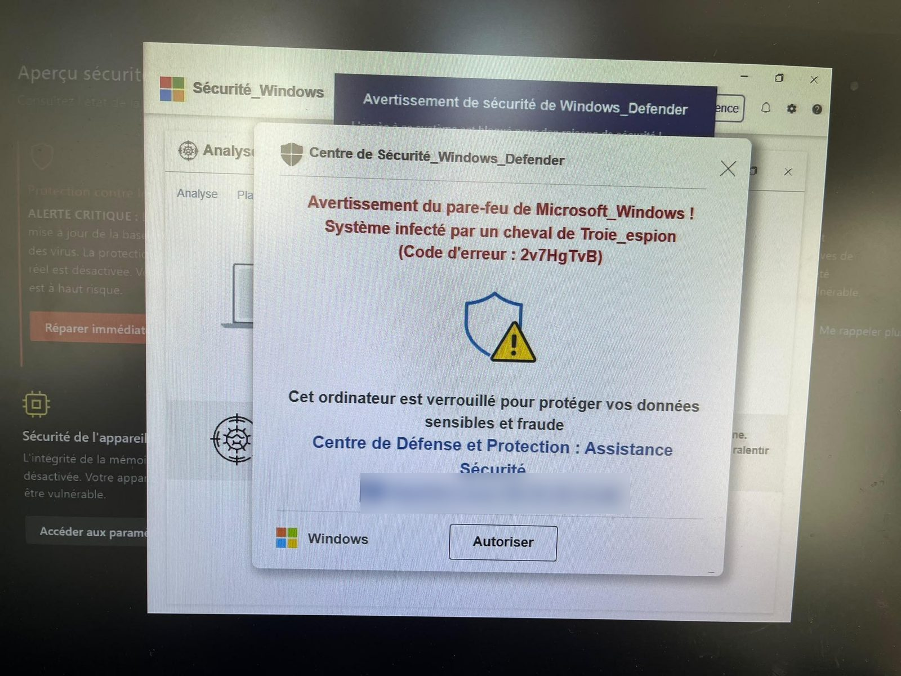

Contexte
LOXYS intervient chez environ 130 clients professionnels dans un rayon de 30 km. Pendant le stage, j'ai accompagné ces interventions en plus de mes projets. Les noms des clients ne sont pas cités.
Interventions réalisées
Postes de travail
- Préparation de postes — configuration de PC portables et fixes avant livraison.
- Migration — transfert des données d'un ancien PC vers un nouveau, puis présentation des améliorations au client.
- Diagnostic matériel — PC fixe lent : remplacement du disque dur par un SSD ; PC de jeu qui se figeait : diagnostic des causes.
- Installations — PC portable et imprimante chez un client, poste fixe dans un centre médical, imprimante et switch ajoutés dans la baie d'une entreprise.
Vidéosurveillance
- Installation de 3 caméras (2 dômes et 1 fisheye) dans une entreprise, configurées sur l'enregistreur NVR ; passage d'un câble Ethernet pour une future caméra.
- Installation d'une caméra pour le showroom d'un artisan, avec câble RJ45 tiré jusqu'à la baie de brassage.
PC piraté
Un client avait été piégé par une fausse alerte de sécurité Windows qui l'avait poussé à installer un logiciel de prise en main à distance. L'objectif réel était d'accéder à son compte bancaire.
- Analyse de la page piège qui avait mené à l'installation.
- Diagnostic PowerShell des processus et des logiciels récemment installés.
- Suppression des logiciels de contrôle à distance et des programmes indésirables, nettoyage des entrées de registre suspectes.
- Remise en état du poste et conseils à l'utilisateur.
Compétences mobilisées (bloc 1, épreuve E5)
2.2
Traiter des demandes concernant les services réseau et système, applicatifsTraiter des demandes système et réseau chez les clients : pannes, postes, caméras, PC compromis. Voir l'explication · Voir les preuves
5.3
Accompagner les utilisateurs dans la mise en place d'un servicePrésenter son nouveau poste au client et le conseiller après une intervention. Voir l'explication · Voir les preuves
Ces compétences sont reportées dans mon tableau de synthèse E5.
Preuves


Rapport hebdomadaire : toutes les interventions datéesOuvrir le PDF